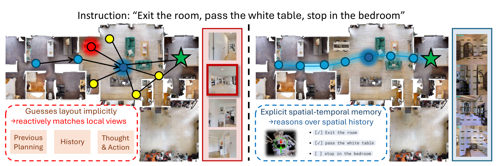
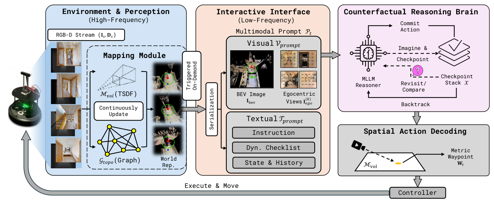
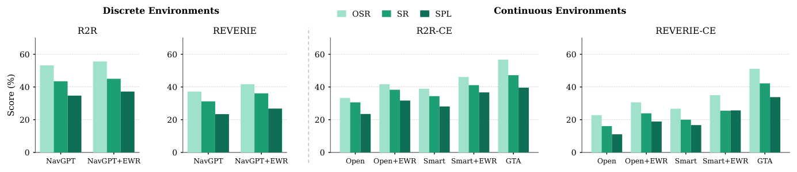
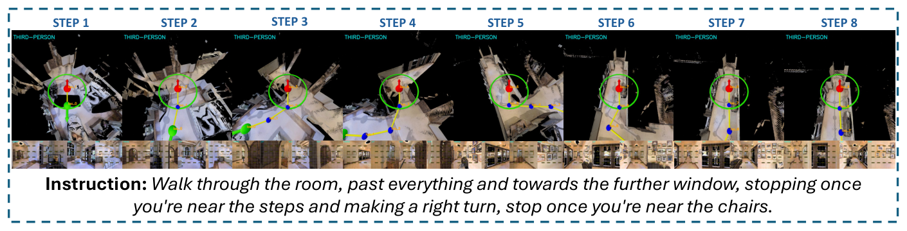
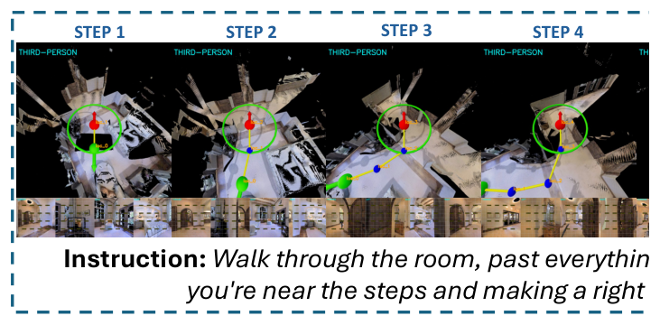
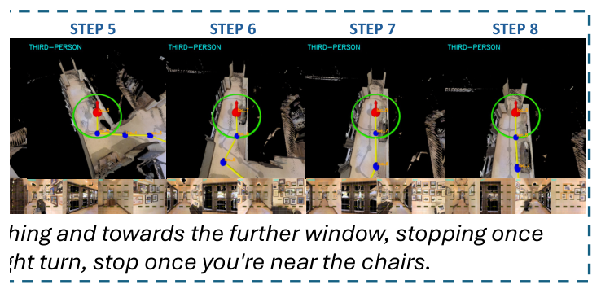
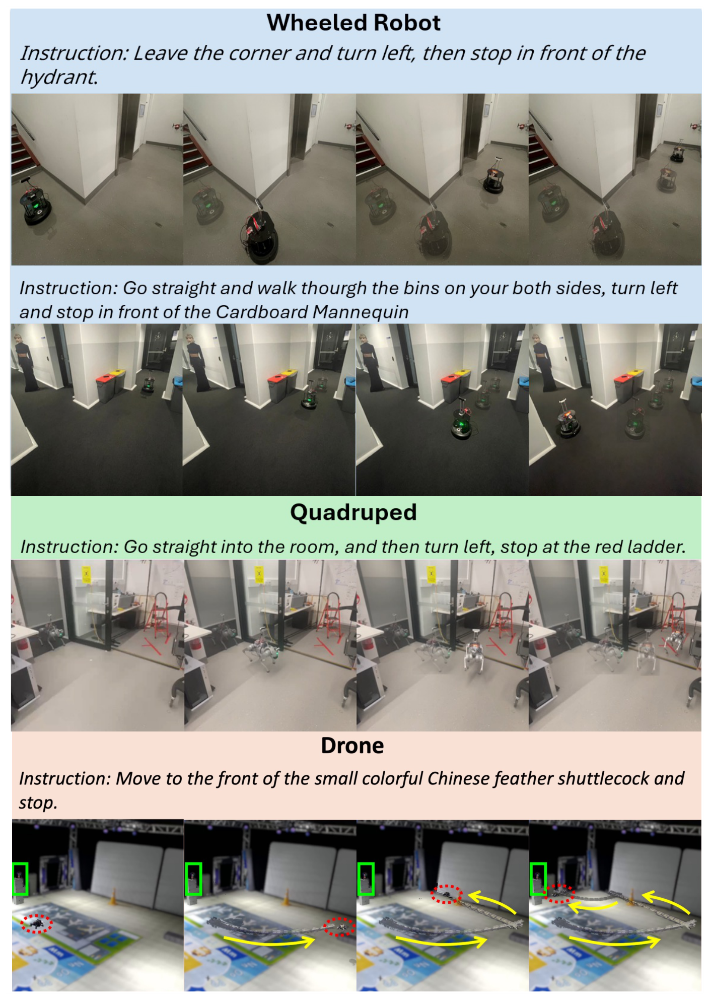

One Agent to Guide Them All: Empowering MLLMs for Vision-and-Language Navigation via Explicit World Representation
An explicit world representation lets multimodal models follow language instructions across wheeled, legged, and aerial robots.


- R2R-CE success, full unseen split (1,839 episodes)
- 48.8%
- RxR-CE success, English unseen subset (260 episodes)
- 46.2%
- Physical platforms tested with GTA
- 3
Abstract
A navigation agent must understand high-level semantic instructions and reason about precise spatial structure. Multimodal Large Language Models (MLLMs), with their strong generalization, are a promising foundation for such agents, yet existing zero-shot approaches force the MLLM to infer global 3D structure implicitly from egocentric RGB streams, often hallucinating room connections and propagating spatial errors into planning. We propose GTA (Guide Them All), a decoupled zero-shot Vision-and-Language Navigation (VLN) framework that separates low-level spatial state estimation from high-level semantic planning. We introduce an explicit metric world representation Wt = ⟨Mvol, Gtopo⟩ that combines accumulated TSDF geometry with topological navigation history and exposes this information to the MLLM through a queryable multimodal interface. We further introduce counterfactual branch reasoning that records branch-specific expectations at decision junctions, checks anticipated outcomes against subsequent observations, and physically backtracks when they disagree. GTA achieves state-of-the-art zero-shot performance with 48.8% Success Rate (SR) / 41.8% SPL on the full R2R-CE Val-Unseen split (1,839 episodes) and 46.2% SR on a 260-episode English RxR-CE Val-Unseen subset, while our distilled 8B variant GTA-Light retains 45.1% SR locally. Finally, we demonstrate zero-shot sim-to-real transfer across wheeled, quadrupedal, and aerial robots in unseen physical environments.
The GTA Framework
Figure. Overview of the GTA framework. 1. Environment & Perception (High-Frequency): The Mapping Module asynchronously fuses incoming RGB-D streams into a Truncated Signed Distance Function (TSDF) volumetric map Mvol (0.05 m voxels) and a topological trajectory graph Gtopo = (V, Etopo) with node merge radius δmerge = 0.8 m and visit counts ci for loop detection. 2. Interactive Interface (Low-Frequency): On demand, the world representation Wt is serialized into a multimodal prompt Pt = {Vprompt, Tprompt} combining a rendered bird's-eye view Ibev and four cardinal egocentric views {0°, 90°, 180°, 270°} overlaid with a [0, 1000]2 coordinate grid, alongside a Procedural Reasoning Blueprint (dynamic instruction checklist Ct, topological/vertical state & safety alerts Salert, and 20-step history Ht). 3. Counterfactual Reasoning Brain & Spatial Action Decoding: A frozen MLLM (or distilled 8B GTA-Light interpreter) forms branch expectations et(k) at junctions, pushes checkpoints κt onto stack K, backtracks when observations contradict expectations, and emits view-pixel actions at = (mt, ut, vt) ray-cast against Mvol into precise 3D metric waypoints wt.

Plug-and-Play World Representation
To test whether explicit metric-topological memory benefits MLLM planners in general, we equip existing discrete and continuous agents (NavGPT, Open-Nav, and SmartWay) with our Explicit World Representation (EWR) across four benchmarks: discrete R2R & REVERIE and continuous R2R-CE & REVERIE-CE.
Adding EWR consistently boosts OSR, SR, and SPL across every baseline and environment. The gains are especially pronounced on REVERIE and REVERIE-CE, where high-level object goals (e.g., “find the pillow in the bedroom”) lack step-by-step directional cues and require persistent global layout memory to track unexplored frontiers.

Counterfactual Branching & GTA-Light
Imagine, Checkpoint, Verify, Backtrack. Greedy step-by-step planners cannot recover once they commit to a wrong hallway. At any junction with |Bt| > 1 viable branches, GTA logs a natural-language expectation et(k) for each branch on checkpoint stack K. If subsequent observations disagree with et(k*), the agent physically retraces Gtopo back to pt', blocks k* ∈ Bt'blk, and selects the best remaining branch—raising observed SR from 31.0% with greedy decisions to 47.0% with the full branch reasoning pipeline on the same 100 R2R-CE episodes.
Distilling into an 8B Local Interpreter. To remove dependency on frontier cloud APIs, we distill GPT-5.1 trajectories on R2R training scenes into a 4-bit QLoRA InternVL3-8B model (GTA-Light) with input-state and prompt robustness augmentations, achieving 45.1% SR / 39.6% SPL locally at 3.96 s per reasoning step.

One Representation Across Three Robot Bodies
End-to-end policies trained in simulation suffer catastrophic degradation under real-world camera, lighting, and locomotion shifts (VLN-BERT: 16.0% SR; RDP: 20.0% SR).
Because GTA anchors semantic decisions in an accumulated TSDF metric map and topological graph (“a wall is a wall in both simulation and reality”) and overlaps high-frequency perception (0.097 s TSDF/BEV update) with asynchronous MLLM reasoning, the exact same pipeline transfers zero-shot across a TurtleBot 4 Wheeled Robot (40.0% SR), a Unitree Go2 Quadruped (40.0% SR), and a 6-DoF Aerial Quadrotor Drone (42.0% SR) without platform-specific tuning.
Interactive Embodiment & World-Representation Explorer
Select a simulated or real-world deployment scenario below to inspect GTA's world representation, procedural checklist progress, and physical trajectory execution across distinct robot embodiments:
World Representation / Early Trajectory Stage

Grounded Waypoint Execution / Terminal Goal

Experimental results
Quantitative Results on R2R-CE & RxR-CE
| Method | Setting | R2R-CE Val-Unseen (1,839 Episodes) | RxR-CE English Val-Unseen Subset (260 Episodes) | |||||||
|---|---|---|---|---|---|---|---|---|---|---|
| NE (↓) | OSR (↑) | SR (↑) | SPL (↑) | nDTW (↑) | NE (↓) | SR (↑) | SPL (↑) | nDTW (↑) | ||
| CMA | Supervised | 6.30 | 49.0 | 38.0 | 33.0 | – | 10.4 | 24.1 | 19.1 | 37.4 |
| VLN-BERT | Supervised | 5.74 | 53.0 | 44.0 | 39.0 | – | 8.98 | 27.1 | 22.7 | 46.7 |
| GridMM | Supervised | 5.11 | 61.0 | 49.0 | 41.0 | – | – | – | – | – |
| ETPNav | Supervised | 4.71 | 65.0 | 57.0 | 49.0 | – | 5.64 | 54.8 | 44.9 | 61.9 |
| BEVBert | Supervised | 4.70 | 67.0 | 59.0 | 50.0 | – | 4.80 | 64.4 | – | 65.4 |
| HNR | Supervised | 4.42 | 67.0 | 61.0 | 51.0 | – | 5.51 | 56.4 | 46.7 | 63.6 |
| NavFoM | Supervised | 4.61 | 72.1 | 61.7 | 55.3 | – | 4.74 | 64.4 | 56.2 | 65.8 |
| Efficient-VLN | Supervised | 4.18 | 73.7 | 64.2 | 55.9 | – | 3.88 | 67.0 | 54.3 | 68.4 |
| Open-Nav | Zero-Shot | 6.70 | 23.0 | 19.0 | 16.1 | 45.8 | – | – | – | – |
| CA-Nav | Zero-Shot | 7.58 | 48.0 | 25.3 | 10.8 | – | 10.37 | 19.0 | 6.0 | – |
| SmartWay | Zero-Shot | 7.01 | 51.0 | 29.0 | 22.5 | – | – | – | – | – |
| STRIDER | Zero-Shot | 6.91 | 39.0 | 35.0 | 30.3 | 51.8 | 11.19 | 21.2 | 9.6 | 30.1 |
| VLN-Zero‡ | Zero-Shot | 5.97 | 51.6 | 42.4 | 26.3 | – | 9.13 | 30.8 | 19.0 | – |
| BZS-VLN | Zero-Shot | 6.12 | 55.0 | 41.0 | 25.4 | – | 7.56 | 35.7 | 21.7 | 42.4 |
| GTA-Light (Ours, 8B Distilled)† | Distilled 8B | 5.41 | 53.9 | 45.1 | 39.6 | 58.8 | 7.33 | 42.5 | 36.2 | 54.1 |
| GTA (Ours) | Zero-Shot | 4.95 | 56.2 | 48.8 | 41.8 | 60.4 | 6.29 | 46.2 | 39.3 | 57.4 |
GTA-Light (†) is trained by distillation. VLN-Zero (‡) pre-explores scenes to build a map. In the shared 100-episode R2R-CE comparison with GPT-5.1 for both methods, GTA achieves 47.0% SR and 38.8% SPL, compared with 40.0% SR and 36.5% SPL for STRIDER.
Counterfactual Reasoning on 100 Shared R2R-CE Episodes
| Reasoning Variant | SR (↑) | SPL (↑) | nDTW (↑) |
|---|---|---|---|
| (a) Greedy, no backtrack | 31.0 | 27.1 | 34.7 |
| (b) + Loop-alert backtrack | 37.0 | 31.8 | 45.6 |
| (c) + Checkpoints & blocking | 39.0 | 35.3 | 49.3 |
| (d) + Expectation checks | 47.0 | 38.8 | 53.6 |
MLLM Backbone Scaling
| Backbone (180-Ep) | OSR (↑) | SR (↑) | SPL (↑) |
|---|---|---|---|
| Qwen3-VL-235B | 46.1 | 37.2 | 29.5 |
| Gemini-2.5 Pro | 48.7 | 42.3 | 34.4 |
| GPT-5.1 (w/o PB) | 48.3 | 45.0 | 38.1 |
| GPT-5.1 (Full GTA) | 56.7 | 47.2 | 39.6 |
Real-World Embodiments
| Method / Platform | SR (↑) | NE (↓) |
|---|---|---|
| VLN-BERT (Supervised) | 16.0% | 5.36 m |
| RDP (Supervised) | 20.0% | 5.45 m |
| SmartWay (Zero-Shot) | 32.0% | 4.85 m |
| GTA – Wheeled | 40.0% | 3.66 m |
| GTA – Quadruped | 40.0% | 3.59 m |
| GTA – Drone | 42.0% | 3.50 m |
Multi-Embodiment Real-World Rollouts

Authors & citation
1AIML, Adelaide University 2The University of Manchester 3Zhejiang University 4Zhejiang Wanli University 5IAIC, A*STAR 6Responsible AI Research Centre, AIML, Adelaide University
@inproceedings{li2026gta,
title = {One Agent to Guide Them All: Empowering MLLMs for Vision-and-Language Navigation via Explicit World Representation},
author = {Zerui Li and Hongpei Zheng and Fangguo Zhao and Yanyan Shao and Jian Zhou and Sihao Lin and Shijie Li and Qi Wu},
booktitle = {10th Conference on Robot Learning (CoRL)},
year = {2026}
}